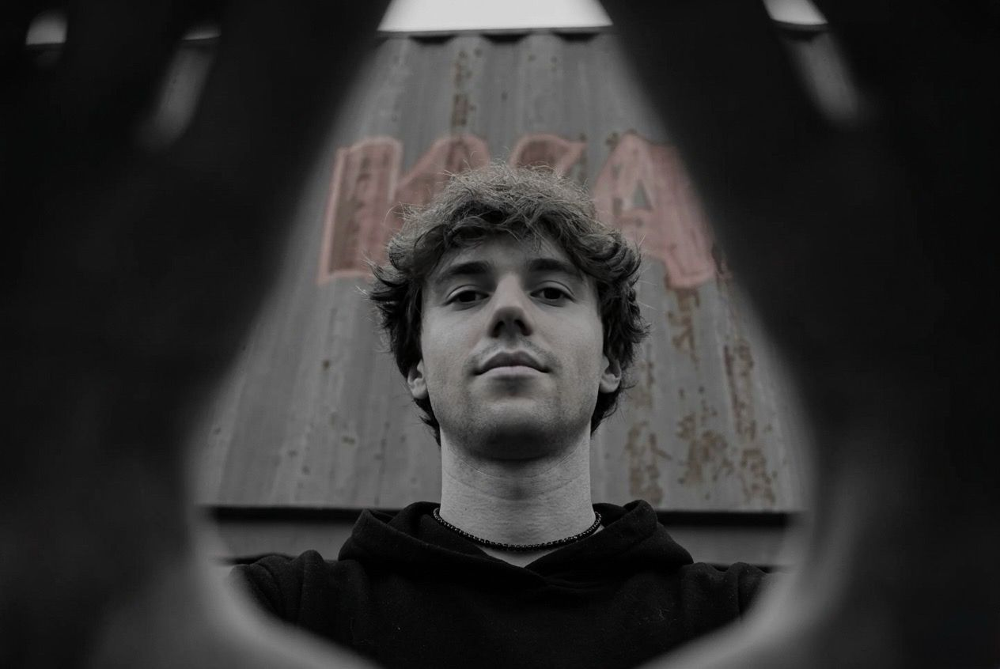
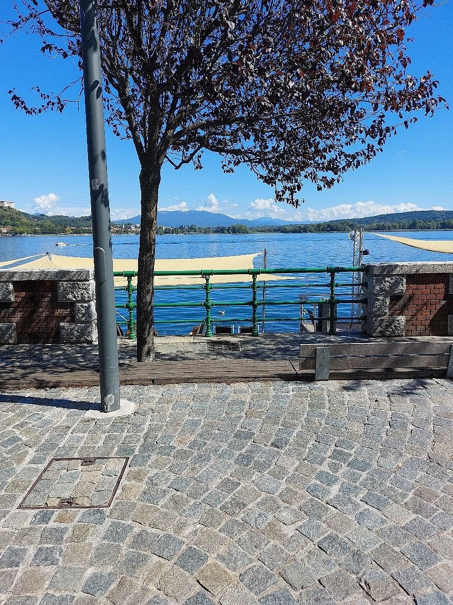
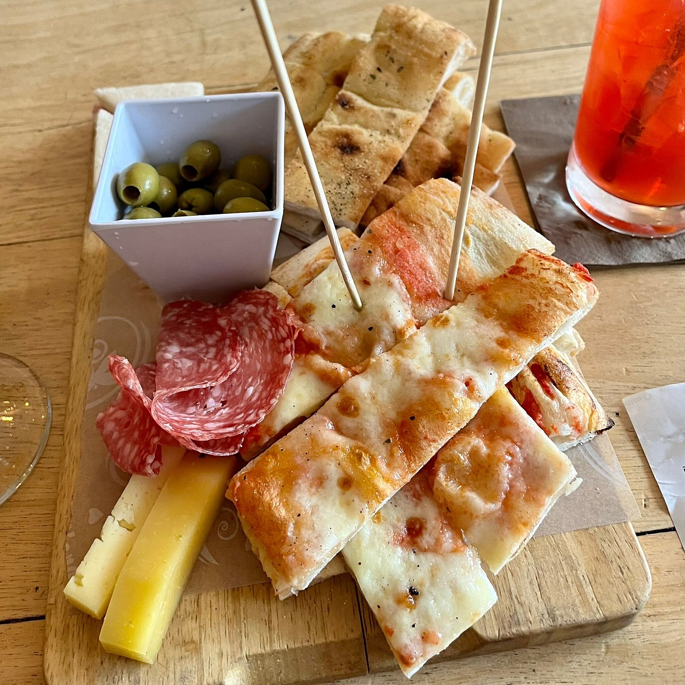
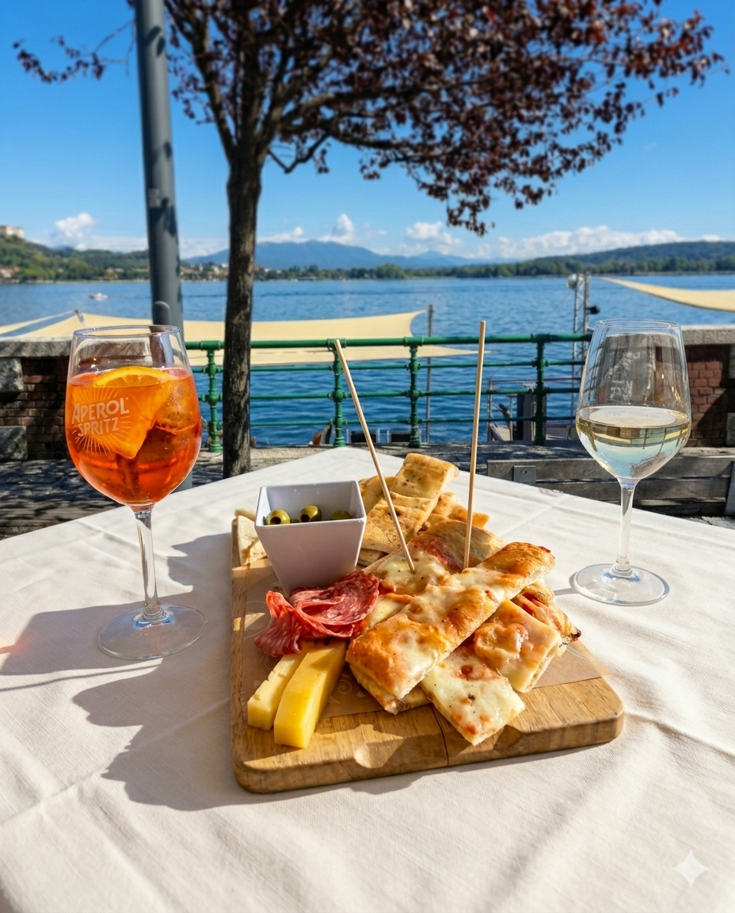

Francesco Angeli sits at the intersection of creative vision and technical execution — delivering the output of a drone pilot, photographer, and automation engineer, without the cost of hiring each separately.
The work.
From bad
to authentic.
A local bar had two low-quality photos on TripAdvisor — one of the aperitivo spread, one of the lake view. One creative brief, one clear vision. No photographer. No studio. No reshooting. Tap or merge to see the result.

Source 1push together
to merge

Source 2
The resultDirected.
Start to finish.
Script, visuals, motion, sound — a complete club promo built entirely with AI. No camera, no crew, no studio. From brief to export in hours, not days. The kind of promo that used to require a full production team.
No drone
required.
Starting from a single still photo taken in the mountains near Champoluc, I generated 15 seconds of cinematic aerial footage — the kind that would normally require a drone, a pilot, and a filming permit. The result is indistinguishable from real drone footage. Tools used: Kling AI.
 Source photo
Source photo
Answers
the phone.
An AI voice agent that handles restaurant reservation calls in Italian — built on Vapi.ai, ElevenLabs, n8n, and Google Sheets. It collects name, date, time, number of guests, allergies, and table preference, checks availability, prevents double bookings, and logs the confirmed reservation automatically. In production it connects to TheFork, Google Calendar, or whatever the restaurant already uses.